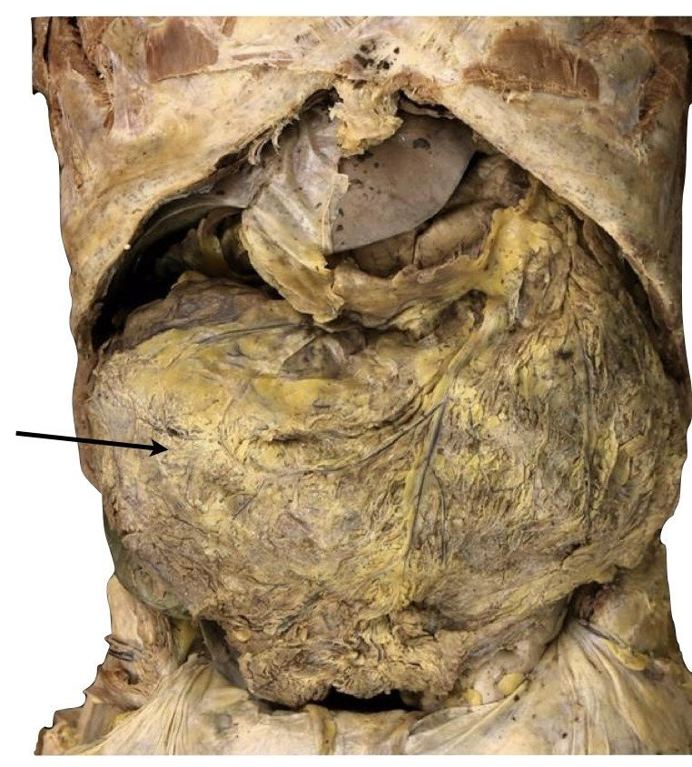
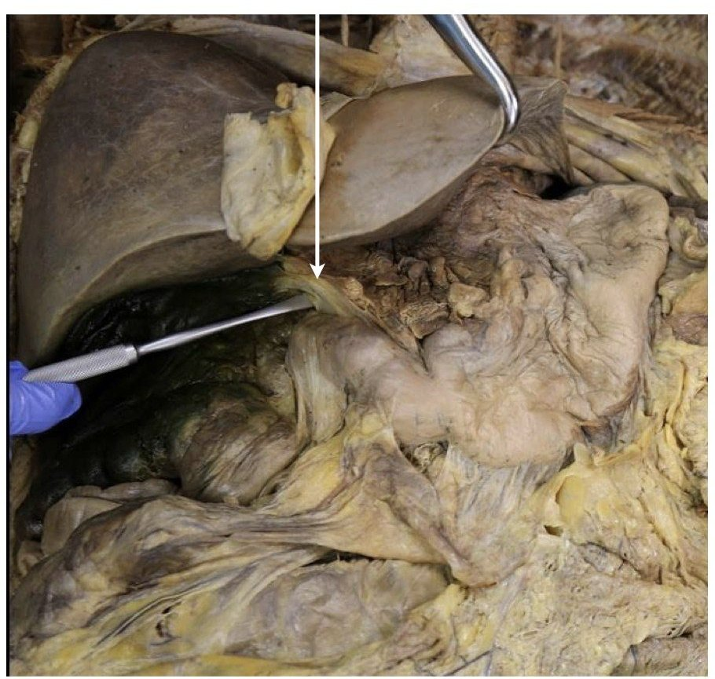

Digestive System, Part IAnswer key
Competencies 109 to 114, 120, 121: peritoneum and folds, retroperitoneal organs, the gut wall and its sphincters, mouth, salivary glands, tongue, esophagus.
Name
A. Peritoneum and the omenta (cadaver)Competency 111
 12
12- 1Parietal peritoneum
- 2Visceral peritoneum

1- 1Greater omentum

1- 1Lesser omentum
Five folds: what each one connects
Greater omentum:greater curvature to the transverse colon
Lesser omentum:lesser curvature to the liver
Falciform ligament:liver to the anterior wall and diaphragm
Mesentery:jejunum and ileum to the posterior wall
Mesocolon:transverse and sigmoid colon to the posterior wall
Extra notes and drawings
B. Mesentery, and what sits behind the peritoneum (cadaver)Competency 111, 112
 123
123- 1Ileum
- 2Jejunum
- 3Mesentery
 123
123- 1Transverse colon
- 2Mesentery
- 3Small intestine
Fill in
Intraperitoneal:wrapped, hanging on a fold
Retroperitoneal:behind the peritoneum, fixed
Retroperitoneal organs:kidneys, pancreas, duodenum, ascending and descending colon
On a mesocolon:transverse and sigmoid colon
Extra notes and drawings
Lecture note sheet 1 of 4 · Digestive · page 1 of 2Dr. Sharilyn Rennie · BIO 004 Human Anatomy · Solano Community College · Photos: BIO 004 Digital Atlas